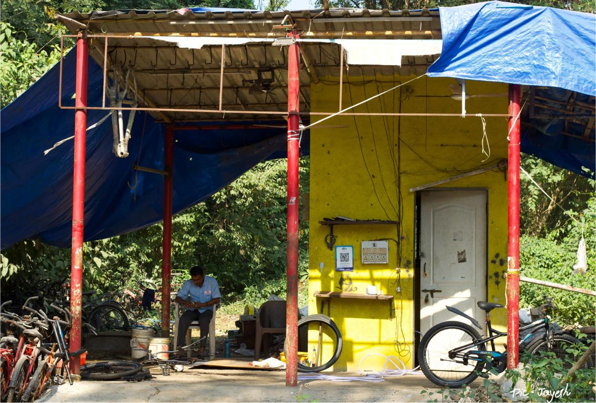
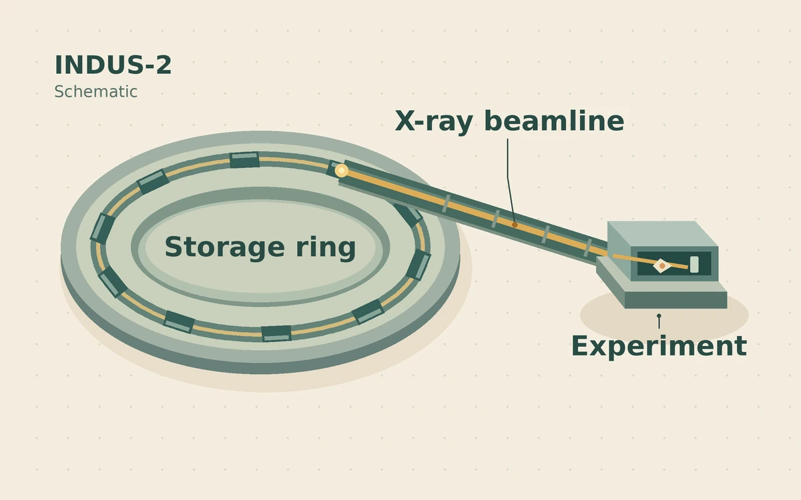
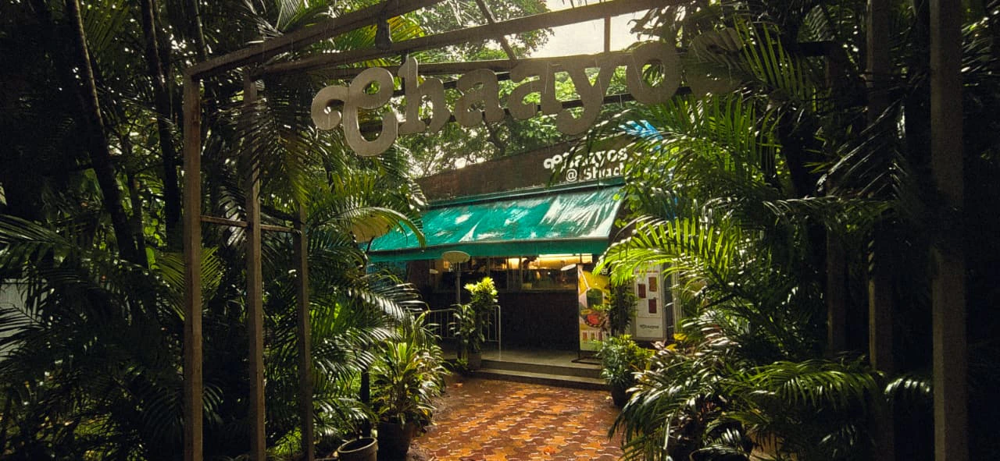

Where the trail begins.
I grew up in a village near hills. I still like getting outside to trek or take photographs.
From Karad to Punjab, Delhi, and Bombay.
With a solo trip to Kashmir along the way.
My journey took me from school in Karad to college in Punjab, a solo trip to Kashmir, a year in Delhi, and the physics lab in Bombay.
I grew up in a village near hills. I still like getting outside to trek or take photographs.
I studied in Karad through Class 12 and qualified in competitive exams, including the JEE. During the COVID-19 pandemic, I also struggled with depression.
I travelled about 2,000 km from Karad to Punjab to study for my BSc at Lovely Professional University. Living that far from home gave me a chance to get to know a different part of India.
At 19, I set out from my university in Punjab and made my way to Srinagar alone. I was a little scared, and figuring out how to get there was part of the adventure. It became one of the most eye-opening experiences of my life.
I studied a polyaniline and magnetite composite for electromagnetic interference shielding. The project brought materials fabrication and characterization together.
After finishing my BSc, I spent a year in Delhi preparing for an exam. From there I went to Bombay to start my MSc in Physics at IIT Bombay.
I moved to Bombay for my MSc at IIT Bombay. Photography gives me a reason to slow down and pay attention to light. In 2024, I was part of IIT Bombay’s photography team at Inter IIT 7.0.

At BARC, I used Raman spectroscopy to study Na₂Cu₂TeO₆ under pressure. Getting clearance to visit the INDUS-2 synchrotron at RRCAT felt like a big deal. At Beamline 11, I worked on high-pressure X-ray diffraction and was struck by the size of the machine.

I completed my MSc in Physics at IIT Bombay. For my thesis at NCPRE, I modelled thin layers of indium zinc oxide and silver for tandem solar cells, looking for a balance between light transmission and electrical conductivity.
After my MSc at IIT Bombay, I joined as a Junior Research Fellow working on indium flip-chip interconnects and 3D integration for quantum devices. I want to keep learning and gain hands-on experience. Outside the lab, I swim, make small crafts, and watch movies. My favourite show is The Big Bang Theory.
